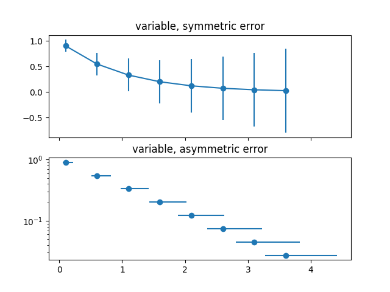

Version 2.2.3
Note
Click here to download the full example code
Errors can be specified as a constant value (as shown in
errorbar_demo.py). However, this example demonstrates
how they vary by specifying arrays of error values.
If the raw x and y data have length N, there are two options:
In addition, this example demonstrates how to use log scale with error bars.
import numpy as np
import matplotlib.pyplot as plt
# example data
x = np.arange(0.1, 4, 0.5)
y = np.exp(-x)
# example error bar values that vary with x-position
error = 0.1 + 0.2 * x
fig, (ax0, ax1) = plt.subplots(nrows=2, sharex=True)
ax0.errorbar(x, y, yerr=error, fmt='-o')
ax0.set_title('variable, symmetric error')
# error bar values w/ different -/+ errors that
# also vary with the x-position
lower_error = 0.4 * error
upper_error = error
asymmetric_error = [lower_error, upper_error]
ax1.errorbar(x, y, xerr=asymmetric_error, fmt='o')
ax1.set_title('variable, asymmetric error')
ax1.set_yscale('log')
plt.show()
Keywords: matplotlib code example, codex, python plot, pyplot Gallery generated by Sphinx-Gallery